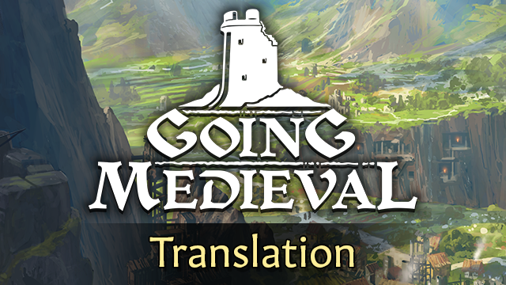

GOING MEDIEVAL VIỆT HÓA
Bản địa hóa trọn vẹn 100% cho tựa game sinh tồn xây dựng thành trì thời Trung Cổ. Chuẩn hóa toàn bộ hệ thống phân công nghề nghiệp, cơ chế chịu lực kiến trúc, xưởng rèn vũ khí, chăn nuôi và các đại lễ hội làng.

👑 7 CHỨC VỤ CỘNG ĐỒNG THUẦN VIỆT
Chuẩn hóa danh xưng chức vụ gần gũi, quen thuộc và toát lên đúng vai trò trong làng thời Trung Cổ.
| Chức vụ gốc (EN) | Bản dịch Tiếng Việt chuẩn | Nhiệm vụ & Bùa lợi (Buff) trong game |
|---|---|---|
| Sergeant-at-arms | Đội Trưởng Lính Gác | Quản lý vũ khí, tăng mạnh điểm kinh nghiệm XP cho dân làng khi tập luyện chiến đấu cận chiến & bắn cung. |
| Broker | Thương Lái | Mặc cả được giá hời hơn với các thương đoàn ghé thăm, thiết lập giao ước buôn bán đôi bên cùng có lợi. |
| Chaplain | Linh Mục | Chủ trì thánh lễ cầu nguyện tại đền thờ Hội Phục Hưng, gia tăng sùng đạo và an ủi linh hồn dân làng. |
| Druid | Đạo Sĩ | Chủ trì nghi lễ thiền định tại đền thờ Huynh Đệ Cây Sồi, cầu xin các Cổ Thần ban phước lành và sự an yên. |
| Prison Warden | Cai Ngục | Quản thúc buồng giam, giám sát lao dịch phạm nhân và đàm đạo cảm hóa để chiêu mộ tù binh gia nhập làng. |
| Librarian | Thủ Thư | Quản lý thư viện cổ thư, gia tăng tốc độ nghiên cứu và chủ trì các Buổi Giảng Sách nâng cao kỹ năng. |
| Bard | Người Hát Rong | Đàn ca, ngâm thơ và kể chuyện anh hùng tại đại sảnh trong các bữa Đại Yến Tiệc để nâng cao tâm trạng. |
⚔️ VŨ KHÍ, KHÍ TÀI & GIÁP TRỤ
Phân cấp vũ khí chuẩn xác từ vũ khí thô sơ cho tới khí tài công thành hạng nặng.
Cung & Nỏ Tầm Xa
• Cung Ngắn (Short Bow): Nhỏ gọn, linh hoạt bắn trên lưng ngựa.
• Cung Dài / Trường Cung (Longbow): Cung gỗ thủy tùng tầm bắn xa uy lực.
• Chiến Cung (War Bow): Cung chiến trợ lực có sức sát thương cực lớn.
• Nỏ & Đại Nỏ (Crossbow & Heavy Crossbow): Mũi tên nỏ đầm tay bắn thủng giáp xích và giáp tấm.
Kiếm, Chùy & Búa Chiến
• Đoản Kiếm / Kiếm Hiệp Sĩ / Đại Kiếm: Vũ khí chém đâm đa dụng.
• Chùy Gai / Chùy Khía / Chùy Xích: Đập móp và vô hiệu hóa giáp sắt.
• Búa Chiến / Cuốc Chiến Phá Giáp: Đòn đánh giáng đòn nghiền nát xương.
• Ngọn Giáo / Rìu Cán Dài Berdiche: Khắc chế kỵ binh và giữ cự ly.
Khí Tài Công Thành
• Cột Gỗ Phá Thành (Battering Ram): Húc sập cổng gỗ phòng thủ.
• Cột Sắt Phá Thành: Nghiền nát cánh cổng sắt kiên cố.
• Nỏ Lớn Ballista & Máy Bắn Đá Trebuchet: Oanh tạc tường thành từ xa.
• Pháo Cối Pot-de-fer & Pháo Ribault: Hỏa lực sơ khai công phá lớn.
📜 SỰ KIỆN LÀNG & LỄ HỘI
Các hoạt động sinh hoạt cộng đồng mang lại bùa lợi và không khí sống động cho khu định cư.
Đại Yến Tiệc
Bữa tiệc linh đình tại đại sảnh với rượu ngon, thịt nướng và tiếng đàn của Người Hát Rong, gia tăng gắn kết và tâm trạng dân làng.
Buổi Giảng Sách
Thủ thư đọc và giải nghĩa sách quý trên bục học giả, ban bùa lợi tăng mạnh điểm kinh nghiệm cho kỹ năng được chọn.
Thánh Lễ Giảng Đạo
Linh mục cử hành thánh lễ tại đền thờ Hội Phục Hưng, gia tăng lòng sùng đạo và sự bình yên cho các tín đồ.
Nghi Lễ Cây Sồi
Đạo sĩ cử hành nghi thức tế lễ và thiền định tại đền thờ Huynh Đệ Cây Sồi để hòa mình cùng Mẹ Thiên Nhiên.
Huấn Luyện Quân Sự
Đội trưởng lính gác triệu tập dân làng tới phòng tập để thao diễn chiến thuật, gia tăng kỹ năng đánh gần và bắn cung.
Buổi Xử Giảo
Cai ngục thi hành án treo cổ công khai tội phạm hoặc giặc cướp để răn đe và giữ nghiêm trật tự kỷ cương cho ngôi làng.
HƯỚNG DẪN CÀI ĐẶT BẢN MOD (3 BƯỚC)
Bản mod sử dụng hệ thống Mod nạp trực tiếp của Going Medieval, không can thiệp vào file gốc và an toàn 100%.
Bước 1: Tải bộ cài Mod ZIP
Nhấp vào nút Tải Bản Mod v1.0.0 để tải file nén về máy tính.
Bước 2: Giải nén vào thư mục Mods của game
Giải nén thư mục VietnameseLocalization vào đường dẫn sau:
Bước 3: Chọn Tiếng Việt trong game
Khởi động Going Medieval ➔ Chọn Cài đặt (Options) ➔ Ngôn ngữ (Language) ➔ Chọn Tiếng Việt và bắt đầu xây dựng pháo đài của bạn!